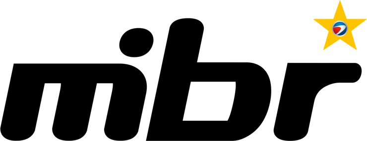
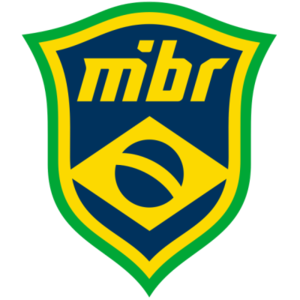

MIBR
Histórico do time
Fundada em 1º de março de 2003 no Rio de Janeiro, a MIBR (Made in Brazil) é a organização brasileira mais tradicional do Counter-Strike, criada quando o empresário Paulo Velloso decidiu investir no sonho competitivo do próprio filho. A marca foi dissolvida em 2012, mas ressurgiu em 2018 depois de ser adquirida pela Immortals, que reformou o elenco com o lendário grupo de FalleN, fer, coldzera e companhia, vindo do título mundial de 2016 pela SK Gaming. Em 2025, a organização passou a ser controlada pela empresa brasileira Spun Mídia, dando início a um novo ciclo de investimentos.
Design da logo
O escudo da MIBR remete diretamente às cores da bandeira do Brasil, combinando o verde e o amarelo com uma base predominantemente preta, criando forte identificação nacional dentro do cenário competitivo internacional. Ao longo dos anos o brasão recebeu variações mais modernas e minimalistas, mas manteve sempre a essência de representar o país nos principais torneios do mundo.
Linha do tempo das logos
-
2003 - 2012

O primeiro brasão da organização, usado durante a era do Counter-Strike 1.6, quando a MIBR se tornou uma das equipes brasileiras mais populares da década.
-
2018

A logo adotada após a compra da marca pela Immortals em 2018, com um design mais moderno que preserva as cores verde e amarela do Brasil.
-
2018 - Atual

Logo atual.